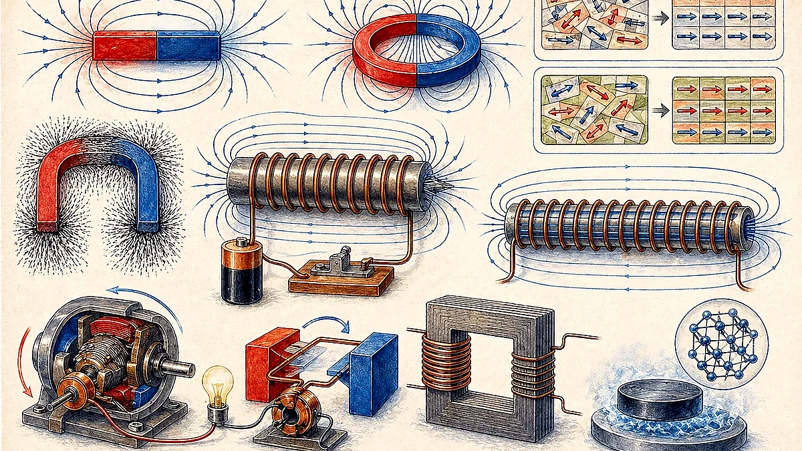
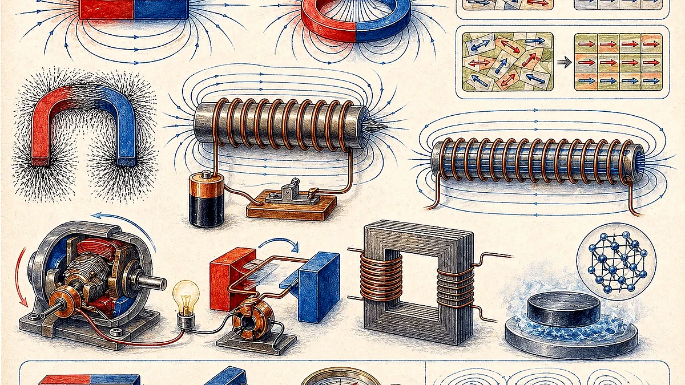
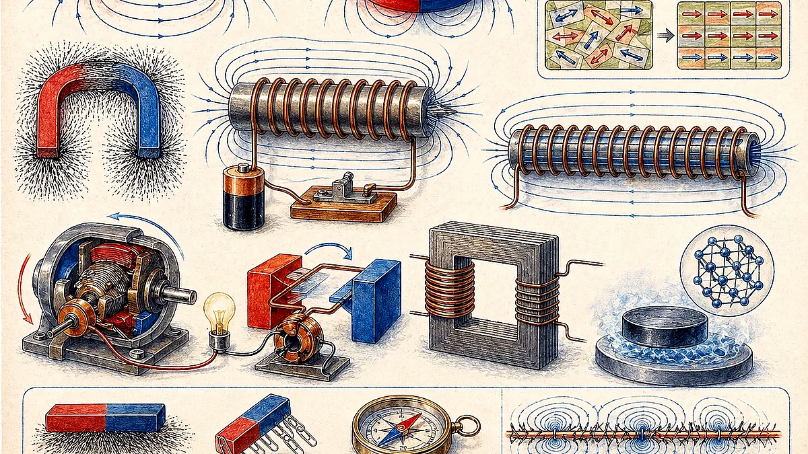

Conductors, Insulators, And Special Cases
The scan compares electrical insulators, semiconductors, and metals using resistivity and conductivity. Pure metals conduct better than many alloys because alloy atoms disrupt the regular metallic lattice and scatter moving electrons.

| Category | Examples From The Scan | Key Point |
|---|---|---|
| Electrical insulators | Hard rubber, glass, fused quartz, diamond, dry wood, oil. | Very high resistance and very low conductivity. |
| Semiconductors | Carbon graphite, germanium, silicon. | Conductivity lies between conductors and insulators and can be controlled. |
| Metals | Silver, copper, aluminium, gold, steel. | Low resistance because electrons can move freely. |
A non-metal that conducts electricity, which is why pencil lead can conduct.
An excellent thermal conductor but an electrical insulator because it lacks free mobile electrons.
Temperature: conductivity of normal conductors decreases as temperature increases. Near absolute zero, some materials can become superconductors.
Semiconductors, Doping, Diodes, And Transistors
The scan introduces semiconductor doping. Adding small amounts of impurity atoms can create n-type or p-type regions, forming p-n junctions used in diodes and transistors.

Adds extra mobile electrons, making electrons the main charge carriers.
Creates holes, making positive holes the main charge carriers.
Magnets, Domains, And Poles
Some rocks called lodestones contain magnetite, a natural magnetic iron oxide. The scan also shows strong neodymium-iron-boron magnets and common magnet shapes.

Small magnetic regions inside materials. Before magnetization, they point in many directions.
Groups of dipoles aligned in the same direction form domains.
When domains align overall, the magnet has two opposite poles where magnetic attraction is strongest.
Breaking a magnet does not isolate a single pole; each piece becomes a smaller magnet with north and south poles.
Magnetic Fields And Magnetizing Metals
A magnet produces magnetic forces in the space around it. Field lines are drawn from the north pole to the south pole outside the magnet. Unlike poles attract and like poles repel.

A steel bar can be magnetized by repeatedly stroking it in one direction with one pole of a bar magnet.
Stroking aligns the magnetic dipoles in the same direction, giving the bar a north and south pole.
Electromagnets
Electricity can be used to make temporary magnets called electromagnets. When current flows through a coiled wire, the magnetic field can align magnetic dipoles in a core material.

Greater current makes a stronger electromagnet.
More turns of wire make a stronger electromagnet.
Soft iron is a good choice because it magnetizes strongly and demagnetizes easily.
Electromagnetic Induction
Electromagnetic induction occurs when a changing magnetic field induces an electric current in a circuit. The operating principle of electromagnetic generators was discovered by Michael Faraday in the 1830s.

Faraday's law idea: changing magnetic flux through a conductor or coil can induce voltage and current. Faster motion, stronger magnets, and more coil turns increase the effect.
Direct Current And Alternating Current
Direct current flows in one direction. Alternating current continually changes direction and has a characteristic waveform.

Unidirectional current used in devices powered by batteries and many household electronics.
Current and voltage periodically reverse direction. AC is commonly generated by rotating a coil in a magnetic field.
Motors And Generators
Motors and generators look related because both use electricity and magnetic fields, but their energy conversions are opposite.

| Device | Energy Conversion | Principle |
|---|---|---|
| Electric motor | Electrical energy to mechanical or kinetic energy. | A current-carrying conductor in a magnetic field experiences a force. |
| Electric generator | Kinetic energy to electrical energy. | Electromagnetic induction. |
How A Coal Power Plant Transfers Energy
The scan closes with a thermal power plant. Coal stores chemical potential energy in hydrocarbon molecules. Burning coal releases heat, which heats water into high-pressure steam. Steam spins a turbine, and the generator converts that kinetic energy into electrical energy.

What To Remember
Metals conduct well; insulators resist current; semiconductor conductivity can be controlled.
Aligned domains create north and south poles; like poles repel and unlike poles attract.
Increase strength using more current, more coils, or a better core.
Changing magnetic fields generate current, which is the basis of generators.